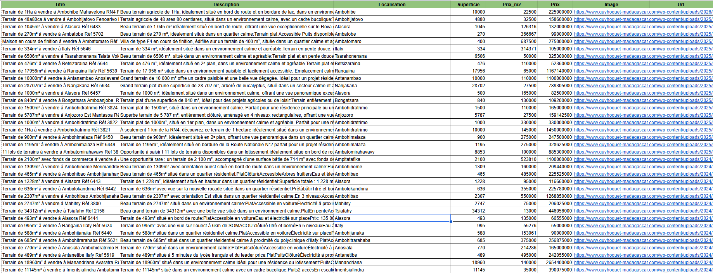

Centralisation et normalisation d'annonces immobilières provenant de plusieurs sites à Madagascar afin de créer une base de données homogène et exploitable.

Capture d'écranLe contexte
Les annonces immobilières sont réparties sur plusieurs plateformes, avec des formats et des informations qui varient d'un site à l'autre. Dans ce projet, l'objectif était de collecter des annonces de terrains depuis plusieurs sites immobiliers à Madagascar, puis de les regrouper dans une structure commune. La principale difficulté ne résidait pas dans l'extraction elle-même, mais dans l'hétérogénéité des données : prix présents dans le titre ou la description, devises différentes, superficies exprimées de manière variable et informations parfois incomplètes.
L'objectif : Transformer des annonces hétérogènes en données comparables et de centraliser les annonces et de normaliser les informations clés, notamment le prix, la superficie et la localisation. Le but était d'obtenir un dataset suffisamment propre et cohérent pour permettre ensuite l'analyse et la comparaison des différentes offres.
L'approche
J'ai commencé par analyser chaque plateforme afin d'identifier sa structure et les spécificités de ses annonces. Une stratégie d'extraction adaptée à chaque site a ensuite été mise en place avec Requests et BeautifulSoup.
Une attention particulière a été portée au traitement des données :
Le résultat
Les annonces provenant de plusieurs sites sont désormais regroupées dans une structure unique et homogène. Chaque annonce contient les principales informations disponibles : prix, superficie, localisation, images, URL et description. Les données ont été nettoyées et normalisées afin de faciliter leur analyse, leur comparaison et leur réutilisation.
Stack technique